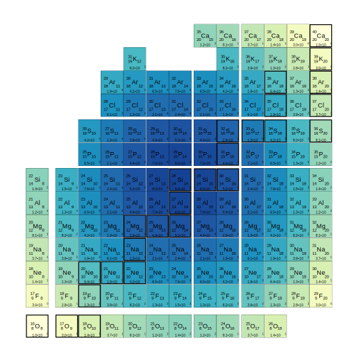
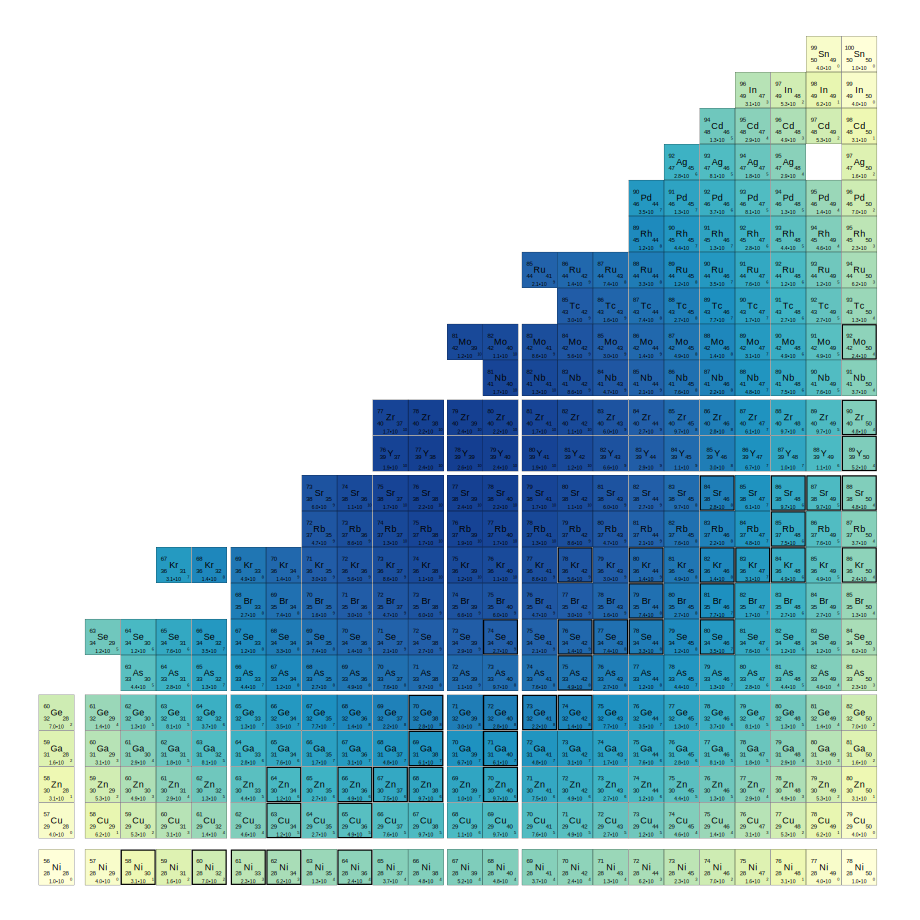

by Oliver Gorton
These figures show the dimensions of M-scheme shell model calculations in various valence spaces. Dimensions were computed with the BIGSTICK shell model code. Figures were generated with a Python script that writes gnuplot code. In spaces with both parities, dimenions include both.
Gaps in the chart indicate magic numbers:
Your browser probably allows you to open these images in a new tab, window, or to download the (.svg) file for better viewing.
sd shell model (1d5/2, 2s1/2, 1d3/2) 
pf shell model (1f7/2, 2p3/2, 1f5.2, 2p1/2)

pfg shell model (2p3/2, 1f5/2, 2p1/2, 1g9/2) 